Lab 2 - Installing Prometheus (container image)
Lab Goal
This lab guides you through installing Prometheus using an open source container image on your local machine, configuring, and running it to start gathering metrics.
Prometheus - Container installation notes
This lab guides you through installing Prometheus using Podman, an open source container
tooling set that works on Mac OS X, Linux, and Windows systems. This workshop assumes you have
installed, initialized, and
running Podman on
your machine:
The rest of this lab is pictured using Mac OS X, but it is assumed you have enough knowledge of your Linux or Windows systems to be able to achieve the same results. Also note that you can run this workshop using Docker, but lets you sort out the details.
The rest of this lab is pictured using Mac OS X, but it is assumed you have enough knowledge of your Linux or Windows systems to be able to achieve the same results. Also note that you can run this workshop using Docker, but lets you sort out the details.
Prometheus - Verifying tooling installation
To start with a working container installation, you should see the following results for the
commands shown (note versions shown might differ for you):
$ podman -v
podman version 5.x <<<< MINIMUM VERSION REQUIRED
$ podman machine init
Looking up Podman Machine image at quay.io/podman/machine-os:6.0 to create VM
Getting image source signatures
Copying blob 688df5f9826a done |
Copying config 44136fa355 done |
Writing manifest to image destination
688df5f9826ad76176bca8eb720821c6f88e269a4529578aec075fd631087b31
Extracting compressed file: podman-machine-default-arm64.raw: done
Machine init complete
$ podman machine start
Starting machine "podman-machine-default"
...
(more console output...)
...
Machine "podman-machine-default" started successfully
$ podman machine list
NAME VM TYPE CREATED LAST UP CPUS MEMORY DISK SIZE
podman-machine-default* applehv About a minute ago Currently running 9 2GiB 100GiB
Now that you have the tooling, let's get started installing Prometheus in a container...
Installation - Make a project directory
The first step will be to open a console or terminal window and start with the command line
to create yourself an empty workshop directory, something like this:
$ mkdir workshop-prometheus
$ cd workshop-prometheus
Setup - A workshop configuration
Using any editor you like, create a file named
workshop-prometheus.yml and you are
going to create a basic Prometheus configuration that looks like the YAML code below which you
can cut-and-paste (be sure to save the results):
# workshop config
global:
scrape_interval: 5s
# Scraping only Prometheus.
scrape_configs:
- job_name: "prometheus"
static_configs:
- targets: ["localhost:9090"]
Configuration - Some thoughts on setup
Normally you are monitoring other targets over HTTP and scraping their endpoints, but we are
going to start with Prometheus as it also exposes its own metrics endpoints. Monitoring your
Prometheus servers health is only an exercise for this workshop. Also note that scraping metrics
every 5 seconds is a bit over the top, commonly you would see 10-60 seconds, but we want our
data to flow in a steady stream for this workshop.
Configuration - The global section
As you can imagine, the
global section is used for settings and default
values. Here we have just set the default scrape interval to be 5 seconds:
# workshop config
global:
scrape_interval: 5s
Configuration - The scrape configs section
The
scrape_configs section is where you tell Prometheus which targets to
scrape to collect metrics from. In the beginning we will be listing each job for our targets
manually, using a host:port format:
# Scraping only Prometheus.
scrape_configs:
- job_name: "prometheus"
static_configs:
- targets: ["localhost:9090"]
Note: production configurations would use service discovery integrations to find targets, more
on that later in this workshop.
Installation - Creating container build file
Next you can use any editor you like, but create a file called
Buildfile
with the following which you can use through cut-and-pasting:
FROM prom/prometheus:v3.13.1
ADD workshop-prometheus.yml /etc/prometheus
Installation - Building a container image
Now you can build your own container image with our custom configuration inserted:
$ podman build -t workshop-prometheus:v3.13 -f Buildfile
STEP 1/2: FROM prom/prometheus:v3.13.1
Resolving "prom/prometheus" using unqualified-search registries (/usr/share/containers/registries.conf.d/999-podman-machine.conf)
Trying to pull docker.io/prom/prometheus:v3.13.1...
Getting image source signatures
Copying blob sha256:ffe63bd2bf8c4ac91ff1c5968544a41470cd021536129e525af0999fd61906f5
Copying blob sha256:905e8aa01b1377f008f4ec145adbd1d44daa0ca79c856ea75cbef37e686c0079
Writing manifest to image destination
STEP 2/2: ADD workshop-prometheus.yml /etc/prometheus
COMMIT workshop-prometheus:v3.13
--> 3cf22d4104ed
Successfully tagged localhost/workshop-prometheus:v3.13
3cf22d4104ed35b3569d558fd6644ccbfae323516eda4fbab057c35522f38a7b
Installation - Verifying built image
Looking at the
IMAGES we see the following:
$ podman images
REPOSITORY TAG IMAGE ID CREATED SIZE
localhost/workshop-prometheus v3.13 3cf22d4104ed 3 minutes ago 236 MB
docker.io/prom/prometheus v3.13.1 4b91f0c2630c 3 weeks ago 236 MB
Prometheus - Start your metrics engines!
Now it's time to start the Prometheus server. We will point to our config file inside the image
we built using a flag (scroll to view log):
$ podman run -p 9090:9090 workshop-prometheus:v3.13 --config.file=/etc/prometheus/workshop-prometheus.yml
time=2026-07-31T09:57:11.564Z level=INFO source=main.go:1724 msg="updated GOGC" old=100 new=75
time=2026-07-31T09:57:11.565Z level=INFO source=main.go:789 msg="Leaving GOMAXPROCS=9: CPU quota undefined" component=automaxprocs
time=2026-07-31T09:57:11.565Z level=INFO source=memlimit.go:198 msg="GOMEMLIMIT is updated" component=automemlimit package=github.com/KimMachineGun/automemlimit/memlimit GOMEMLIMIT=1829025792 previous=9223372036854775807
time=2026-07-31T09:57:11.565Z level=INFO source=main.go:896 msg="Starting Prometheus Server" mode=server version="(version=3.13.1, branch=HEAD, revision=73ff57ce2b8161059ac7fe5188f03f1c3d22b29a)"
time=2026-07-31T09:57:11.565Z level=INFO source=main.go:901 msg="operational information" build_context="(go=go1.26.5, platform=linux/arm64, user=root@6a98665b49f7, date=20260710-08:21:41, tags=netgo,builtinassets)" host_details="(Linux 7.1.3-200.fc44.aarch64 #1 SMP PREEMPT_DYNAMIC Sat Jul 4 19:23:52 UTC 2026 aarch64 64589d0f8ec1 (none))" fd_limits="(soft=524288, hard=524288)" vm_limits="(soft=unlimited, hard=unlimited)"
time=2026-07-31T09:57:11.632Z level=INFO source=web.go:727 msg="Start listening for connections" component=web address=0.0.0.0:9090
time=2026-07-31T09:57:11.633Z level=INFO source=main.go:1456 msg="Starting TSDB ..."
time=2026-07-31T09:57:11.633Z level=INFO source=tls_config.go:354 msg="Listening on" component=web address=[::]:9090
time=2026-07-31T09:57:11.633Z level=INFO source=tls_config.go:357 msg="TLS is disabled." component=web http2=false address=[::]:9090
time=2026-07-31T09:57:11.634Z level=INFO source=head.go:709 msg="Replaying on-disk memory mappable chunks if any" component=tsdb
time=2026-07-31T09:57:11.634Z level=INFO source=head.go:795 msg="On-disk memory mappable chunks replay completed" component=tsdb duration=750ns
time=2026-07-31T09:57:11.634Z level=INFO source=head.go:803 msg="Replaying WAL, this may take a while" component=tsdb
time=2026-07-31T09:57:11.634Z level=INFO source=head.go:898 msg="WAL segment loaded" component=tsdb segment=0 maxSegment=0 duration=104.042µs
time=2026-07-31T09:57:11.634Z level=INFO source=head.go:935 msg="WAL replay completed" component=tsdb checkpoint_replay_duration=15.75µs wal_replay_duration=124.125µs wbl_replay_duration=125ns chunk_snapshot_load_duration=0s mmap_chunk_replay_duration=750ns total_replay_duration=148.416µs
time=2026-07-31T09:57:11.634Z level=INFO source=main.go:1477 msg="filesystem information" fs_type=XFS_SUPER_MAGIC
time=2026-07-31T09:57:11.634Z level=INFO source=main.go:1480 msg="TSDB started"
time=2026-07-31T09:57:11.634Z level=INFO source=main.go:1678 msg="Loading configuration file" filename=/etc/prometheus/workshop-prometheus.yml
time=2026-07-31T09:57:11.635Z level=INFO source=main.go:1094 msg="TSDB retention updated" duration=15d size=0B percentage=0
time=2026-07-31T09:57:11.635Z level=INFO source=main.go:1717 msg="Completed loading of configuration file" db_storage=14.25µs remote_storage=1.041µs web_handler=125ns query_engine=500ns scrape=132.791µs scrape_sd=14.125µs notify=584ns notify_sd=417ns rules=834ns tracing=3.208µs filename=/etc/prometheus/workshop-prometheus.yml totalDuration=293.25µs
time=2026-07-31T09:57:11.635Z level=INFO source=main.go:1441 msg="Server is ready to receive web requests."
time=2026-07-31T09:57:11.635Z level=INFO source=manager.go:211 msg="Starting rule manager..." component="rule manager"
...
Prometheus - Adjusting settings live
Using this container image we built means any changes you need to make to the configuration
that were in the flags used to start the server will require a new image be built. The old
container stopped, and the new container started using the new image.
Now let's see if our Prometheus server is up and running on our local machine by loading the status page in our browser at http://localhost:9090, noting it needs to run a little bit to collect some data from its own HTTP metrics endpoint.
Now let's see if our Prometheus server is up and running on our local machine by loading the status page in our browser at http://localhost:9090, noting it needs to run a little bit to collect some data from its own HTTP metrics endpoint.
Prometheus - The status page

Now try the dark mode feature by clicking on the half moon icon in the top right corner.
Prometheus - Status page (dark mode)
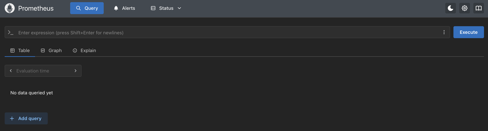
Now try the metrics endpoint
(http://localhost:9090/metrics)
directly in your browser.
Prometheus - Live metrics endpoint

Prometheus - Checking your targets
After you configure a new
prometheus target to scrape and (re)start the
Prometheus server, validate it's running correctly by going to the status page, using the
drop-down menu at the top labeled STATUS and selecting
TARGETS:

Prometheus - Checking your targets
This shows you a list of the targets, in our case just one, featuring the scrape configuration
details. The most important field here is the
STATE, where we want to see a
green UP:

Prometheus - Bad target state
Let's break our configuration and see what that looks like in the targets status page. To do this
open up your configuration file
workshop-prometheus.yml and edit the
scrape_configs section to alter the targets port number as shown:
# Scraping only Prometheus.
scrape_configs:
- job_name: "prometheus"
static_configs:
- targets: ["localhost:9099"]
Save and see next slide for applying the new configuration.
Installation - Building a new container image
Now you can rebuild your own container image with our broken configuration inserted:
$ podman build -t workshop-prometheus:bad-target -f Buildfile
STEP 1/2: FROM prom/prometheus:v3.13.1
STEP 2/2: ADD workshop-prometheus.yml /etc/prometheus
--> Using cache 3cf22d4104ed35b3569d558fd6644ccbfae323516eda4fbab057c35522f38a7b
COMMIT workshop-prometheus:bad-target
--> 3cf22d4104ed
Successfully tagged localhost/workshop-prometheus:bad-target
Successfully tagged localhost/workshop-prometheus:v3.13
3cf22d4104ed35b3569d558fd6644ccbfae323516eda4fbab057c35522f38a7b
Installation - Verifying rebuilt image
Looking at the
IMAGES we see it was rebuilt just a bit ago, moving the older
image out of the way:
$ podman images
REPOSITORY TAG IMAGE ID CREATED SIZE
localhost/workshop-prometheus bad-target 3cf22d4104ed 9 minutes ago 236 MB
localhost/workshop-prometheus v3.13 3cf22d4104ed 9 minutes ago 236 MB
docker.io/prom/prometheus v3.13.1 4b91f0c2630c 3 weeks ago 236 MB
Prometheus - Start your broken configuration
First you stop the running container (using CTRL-C as we are not running the container detached),
then start it again as we did before, but this time the newest rebuilt image will be used:
$ podman run -p 9090:9090 workshop-prometheus:bad-target --config.file=/etc/prometheus/workshop-prometheus.yml
time=2026-07-31T09:57:11.564Z level=INFO source=main.go:1724 msg="updated GOGC" old=100 new=75
time=2026-07-31T09:57:11.565Z level=INFO source=main.go:789 msg="Leaving GOMAXPROCS=9: CPU quota undefined" component=automaxprocs
time=2026-07-31T09:57:11.565Z level=INFO source=memlimit.go:198 msg="GOMEMLIMIT is updated" component=automemlimit package=github.com/KimMachineGun/automemlimit/memlimit GOMEMLIMIT=1829025792 previous=9223372036854775807
time=2026-07-31T09:57:11.565Z level=INFO source=main.go:896 msg="Starting Prometheus Server" mode=server version="(version=3.13.1, branch=HEAD, revision=73ff57ce2b8161059ac7fe5188f03f1c3d22b29a)"
time=2026-07-31T09:57:11.565Z level=INFO source=main.go:901 msg="operational information" build_context="(go=go1.26.5, platform=linux/arm64, user=root@6a98665b49f7, date=20260710-08:21:41, tags=netgo,builtinassets)" host_details="(Linux 7.1.3-200.fc44.aarch64 #1 SMP PREEMPT_DYNAMIC Sat Jul 4 19:23:52 UTC 2026 aarch64 64589d0f8ec1 (none))" fd_limits="(soft=524288, hard=524288)" vm_limits="(soft=unlimited, hard=unlimited)"
time=2026-07-31T09:57:11.632Z level=INFO source=web.go:727 msg="Start listening for connections" component=web address=0.0.0.0:9090
time=2026-07-31T09:57:11.633Z level=INFO source=main.go:1456 msg="Starting TSDB ..."
time=2026-07-31T09:57:11.633Z level=INFO source=tls_config.go:354 msg="Listening on" component=web address=[::]:9090
time=2026-07-31T09:57:11.633Z level=INFO source=tls_config.go:357 msg="TLS is disabled." component=web http2=false address=[::]:9090
time=2026-07-31T09:57:11.634Z level=INFO source=head.go:709 msg="Replaying on-disk memory mappable chunks if any" component=tsdb
time=2026-07-31T09:57:11.634Z level=INFO source=head.go:795 msg="On-disk memory mappable chunks replay completed" component=tsdb duration=750ns
time=2026-07-31T09:57:11.634Z level=INFO source=head.go:803 msg="Replaying WAL, this may take a while" component=tsdb
time=2026-07-31T09:57:11.634Z level=INFO source=head.go:898 msg="WAL segment loaded" component=tsdb segment=0 maxSegment=0 duration=104.042µs
time=2026-07-31T09:57:11.634Z level=INFO source=head.go:935 msg="WAL replay completed" component=tsdb checkpoint_replay_duration=15.75µs wal_replay_duration=124.125µs wbl_replay_duration=125ns chunk_snapshot_load_duration=0s mmap_chunk_replay_duration=750ns total_replay_duration=148.416µs
time=2026-07-31T09:57:11.634Z level=INFO source=main.go:1477 msg="filesystem information" fs_type=XFS_SUPER_MAGIC
time=2026-07-31T09:57:11.634Z level=INFO source=main.go:1480 msg="TSDB started"
time=2026-07-31T09:57:11.634Z level=INFO source=main.go:1678 msg="Loading configuration file" filename=/etc/prometheus/workshop-prometheus.yml
time=2026-07-31T09:57:11.635Z level=INFO source=main.go:1094 msg="TSDB retention updated" duration=15d size=0B percentage=0
time=2026-07-31T09:57:11.635Z level=INFO source=main.go:1717 msg="Completed loading of configuration file" db_storage=14.25µs remote_storage=1.041µs web_handler=125ns query_engine=500ns scrape=132.791µs scrape_sd=14.125µs notify=584ns notify_sd=417ns rules=834ns tracing=3.208µs filename=/etc/prometheus/workshop-prometheus.yml totalDuration=293.25µs
time=2026-07-31T09:57:11.635Z level=INFO source=main.go:1441 msg="Server is ready to receive web requests."
time=2026-07-31T09:57:11.635Z level=INFO source=manager.go:211 msg="Starting rule manager..." component="rule manager"
...
Prometheus - Verify bad target state
Back to the target state page, and we see that indeed the target we configured is broken:

Exercise: go back and fix this target before proceeding!
Prometheus - Exploring command-line flags
When you started Prometheus we mentioned a flag to point at our new configuration file. There is
a status page you can use to view all the flags that have been set (by your or default settings).
Using the drop-down menu again at the top labeled
STATUS and selecting
COMMAND-LINE FLAGS:
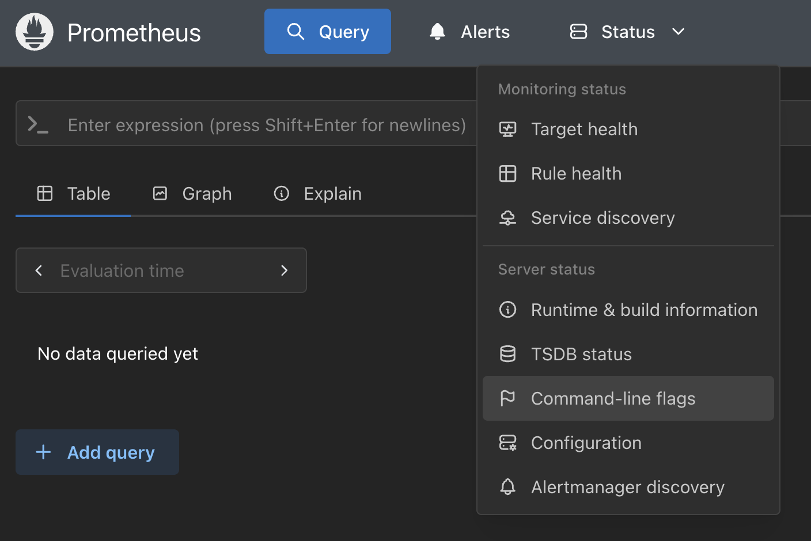
Prometheus - Exploring command-line flags
This shows you a long list of flags with their current values and a search field for locating
one you might be interested in:
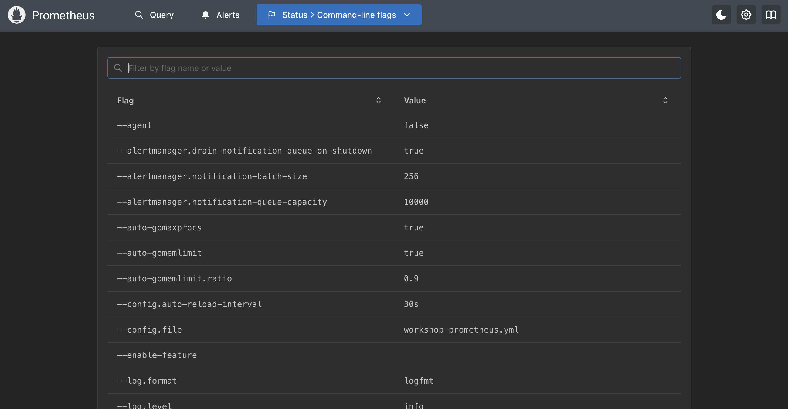
Prometheus - Searching for a flag
By filling in a search query, you can narrow down the long list to a specific area. Let's
explore the flag value for
--config.file:
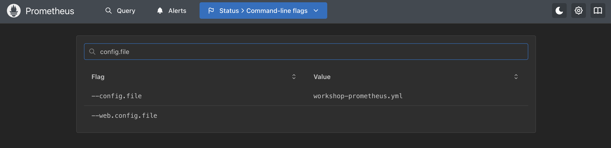
Prometheus - Time series database status
Next, there is a status page you can use to view your time series database, or TSDB, status.
Using the drop-down menu again at the top labeled
STATUS and selecting
TSDB-STATUS:
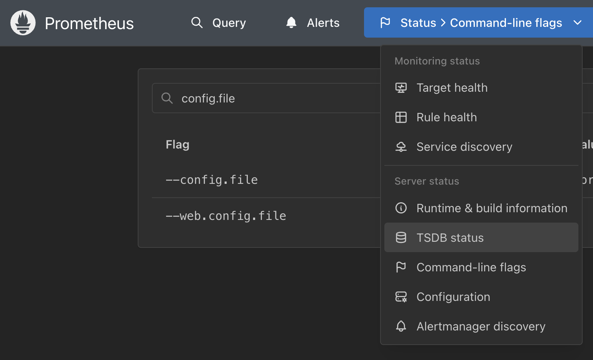
Prometheus - Time series database status
This shows you some details for the time series being collected in an overview status line with
several tables below with cardinality status:
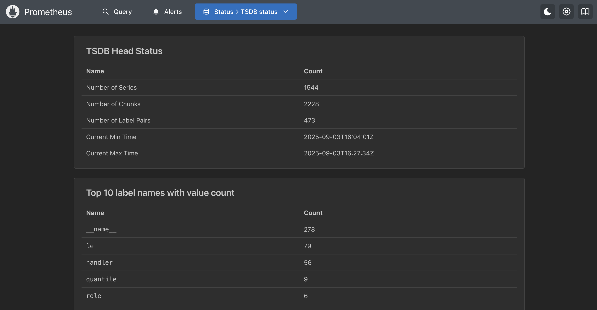
Prometheus - Exploring active configuration
Lastly, at least in this lab, you can verify the exact configuration being applied to your
Prometheus server. Using the drop-down menu again at the top labeled
STATUS
and selecting CONFIGURATION:
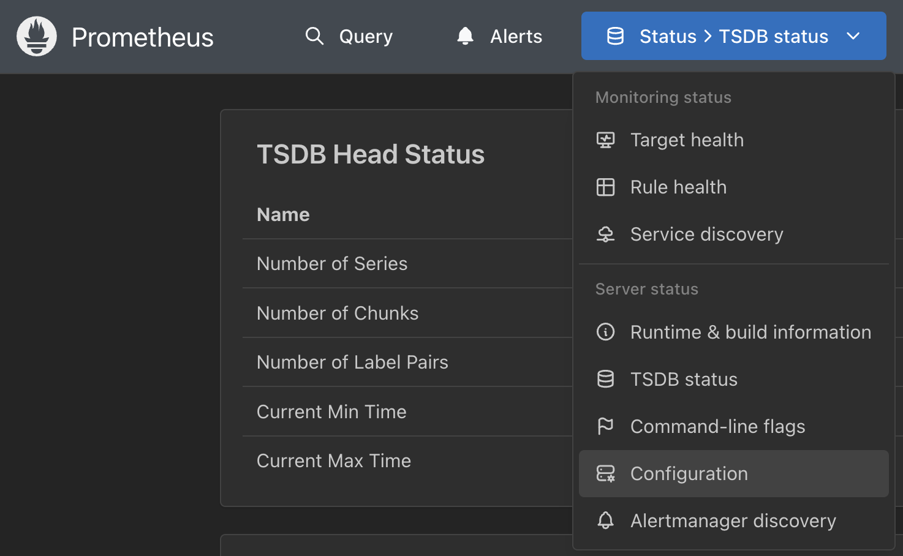
Prometheus - Exploring active configuration
This shows you your exact configuration, often including some defaults that you might not have
in your personal configuration file, yet are being used. There is even a handy copy-to-clipboard
button for you to grab it:
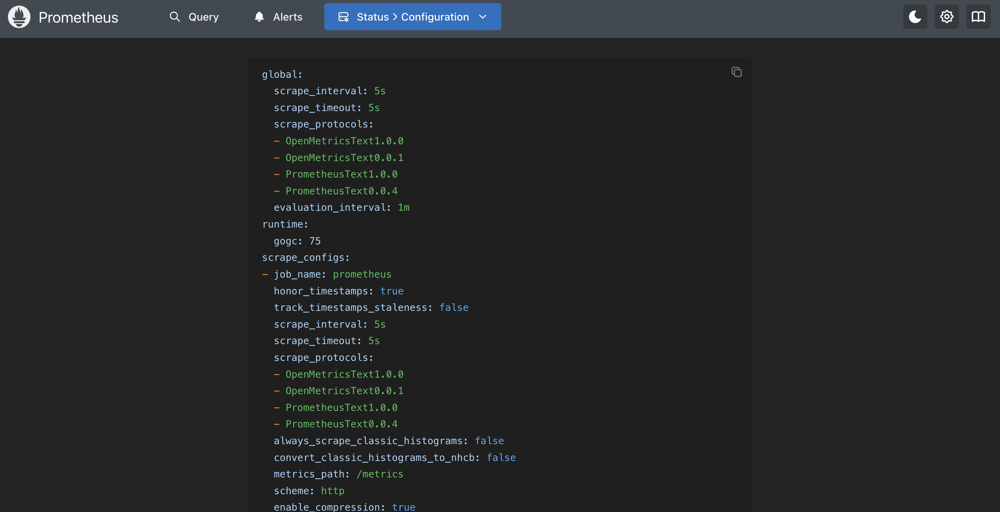
Prometheus - Using the expression tooling
You can navigate back to the expression browser that lets you query your time series data
by clicking on the menu entry
GRAPH. This is the default built-in query
interface for running Prometheus Query Language (PromQL) queries. Be sure you are in the
TABLE tab:
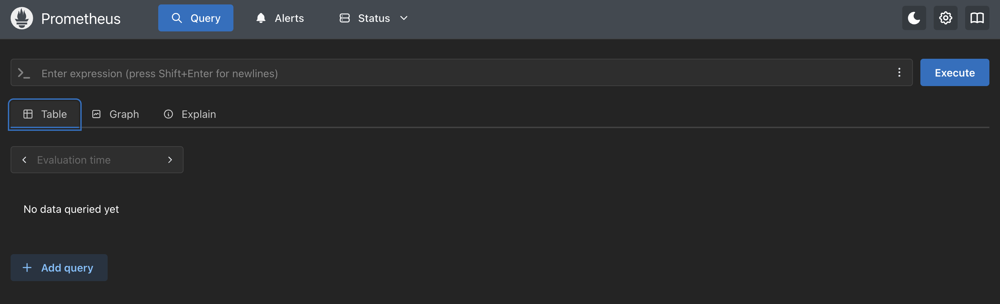
Prometheus - Total samples ingested
The
TABLE view provides the output of a query written using PromQL expression as
a series. It's less expensive to use than the other option, GRAPH, because you are
not plotting out the series answers in a graph. Without worrying about the PromQL used (we'll
explore that later in this workshop), lets show the total number of samples ingested by our
Prometheus server since it started:
# Copy this line below comments into the Expression field and
# click on the EXECUTE button on the right side of the screen.
#
prometheus_tsdb_head_samples_appended_total
Prometheus - Validating an expression
You will have noticed that there are three buttons to the right of the
EXPRESSION entry field. Click to show a menu with options. The first one can
be used to explore available metrics, the second to validate the expression you entered, and the
last one to show a tree view of complexer queries (this one is not complex). We'll just click
on the FORMAT EXPRESSION menu entry and if it's a good expression you get a
validation pop-up as shown below:

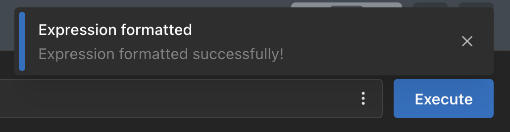
Prometheus - Execute the expression query
After validating our expression, run it by clicking on the
EXECUTE button:

Prometheus - Exploring the visualization
Let's explore by clicking on the
GRAPH tab. Note the features included to
visualize queries. I have adjusted my longer running server to look at 12h of data here, and
I am browsing the results:
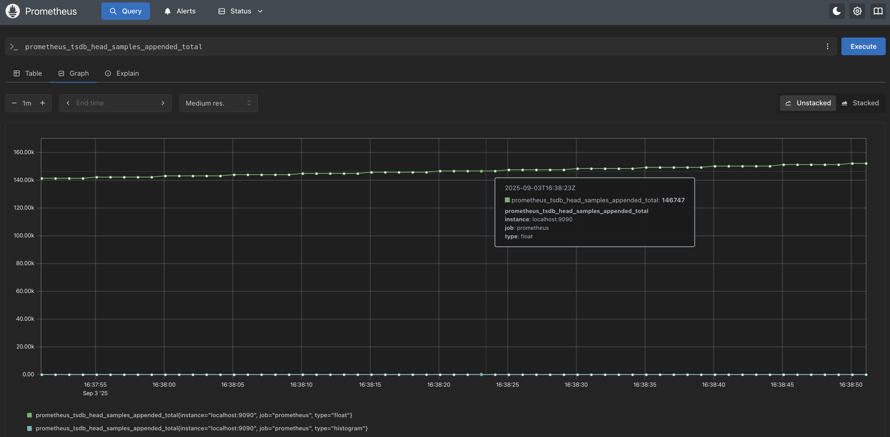
Prometheus - Add another query
Go back to the
TABLE tab. Notice at the bottom there is a button
ADD QUERY, click on it to add another query panel in which we will execute
the following query expression. Let's look at the number of samples ingested per second averaged
over a 1m window of time:
# Copy this line below comments into the Expression field and
# click on the EXECUTE button on the right side of the screen.
#
rate(prometheus_tsdb_head_samples_appended_total[1m])
Prometheus - Execute the second query
You can now see multiple expressions are possible:

Prometheus - Exploring second visualization
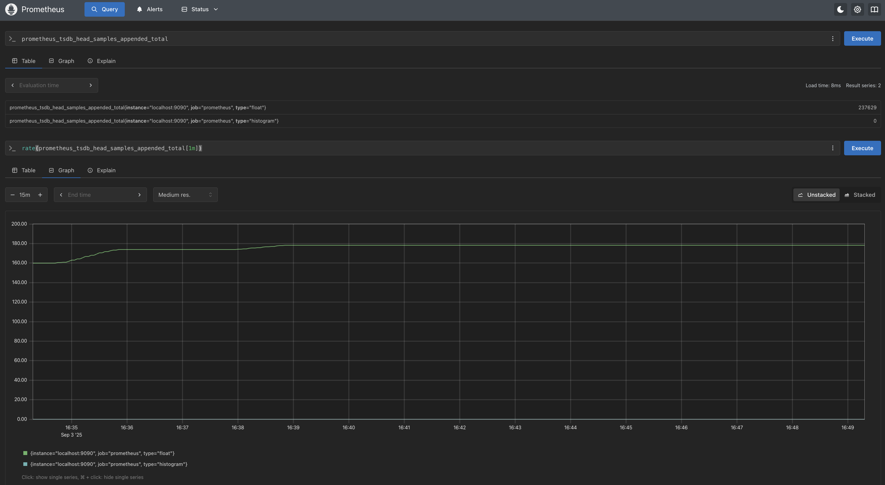
Intermezzo - Warning about pages
If you now select any of the status pages from the
Pro tip: you might want to work using browser tabs.
STATUS menu at the top and
then return to the expression query page using the GRAPH menu entry. You will
notice that extra panels you might have added will be gone.Pro tip: you might want to work using browser tabs.
Prometheus - One last query
Assuming you went to another status page and back, we have a last query we will run here to
simulate the same query used to fill the system UP metric we viewed for our Prometheus target:
# Copy this line below comments into the Expression field and
# click on the EXECUTE button on the right side of the screen.
#
up{job="prometheus"}
Prometheus - Execute the UP query
You can now see the results as a boolean value suggesting it is really UP:

Prometheus - Exploring this silly visualization
This is a rather silly metric to visualize this way, but this is what it looks like going back
over 1d as my server was running during this lab's development (you can check my working hours!):
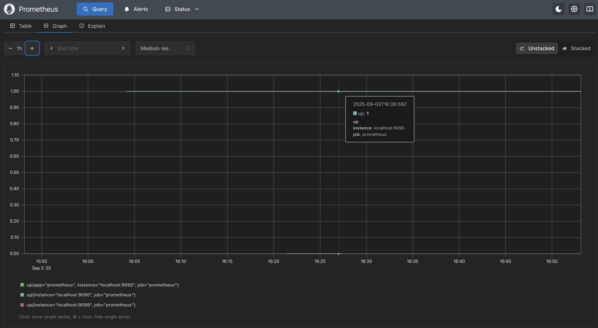
Lab completed - Results
Next up, exploring the query language...

Contact - are there any questions?
Eric D. Schabell
Director Evangelism
Contact: @ericschabell {@fosstodon.org) or https://www.schabell.org
Director Evangelism
Contact: @ericschabell {@fosstodon.org) or https://www.schabell.org